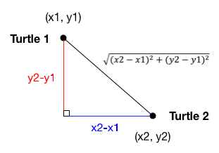

4. Boolean Functions and Randomly Walking Turtles¶
Quick Overview of Day
Introduce the idea of Boolean functions (which return either True or False). Demonstrate two Boolean functions relating to turtle graphics.
CS20-CP1 Apply various problem-solving strategies to solve programming problems throughout Computer Science 20.
CS20-FP1 Utilize different data types, including integer, floating point, Boolean and string, to solve programming problems.
CS20-FP2 Investigate how control structures affect program flow.
CS20-FP3 Construct and utilize functions to create reusable pieces of code.
4.1. Boolean Functions¶
We have already seen that boolean values result from the evaluation of boolean expressions. Since the result of any expression evaluation can be returned by a function (using the return statement), functions can return boolean values. This turns out to be a very convenient way to hide the details of complicated tests. For example:
The name of this function is is_divisible. It is common to give boolean
functions names that sound like yes/no questions. is_divisible returns
either True or False to indicate whether the x is or is not
divisible by y.
We can make the function more concise by taking advantage of the fact that the
condition of the if statement is itself a boolean expression. We can return
it directly, avoiding the if statement altogether:
def is_divisible(x, y):
return x % y == 0
Boolean functions are often used in conditional statements:
if is_divisible(x, y):
... # do something ...
else:
... # do something else ...
It might be tempting to write something like
if is_divisible(x, y) == True:
but the extra comparison is redundant. You only need an == expression if you are comparing some other type than boolean. (is_divisible(x, y) == False can also be made more concise as
not is_divisible(x, y)). The following example shows the is_divisible function at work. Notice how
descriptive the code is when we move the testing details into a boolean function. Try it
with a few other actual arguments to see what is printed.
Here is the same program in codelens. When we evaluate the if statement in the main part of the program, the evaluation of
the boolean expression causes a call to the is_divisible function. This is very easy to see in codelens.
Activity: CodeLens 4.1.3 (boolean_functions_codelens_1)
4.1.1. Check Your Understanding¶
- A function that returns True or False
- A Boolean function is just like any other function, but it always returns True or False.
- A function that takes True or False as an argument
- A Boolean function may take any number of arguments (including 0, though that is rare), of any type.
- The same as a Boolean expression
- A Boolean expression is a statement that evaluates to True or False, e.g. 5+3==8. A function is a series of expressions grouped together with a name that are only executed when you call the function.
boolean-functions4: What is a Boolean function?
- Yes
- It is perfectly valid to return the result of evaluating a Boolean expression.
- No
- x +y < z is a valid Boolean expression, which will evaluate to True or False. It is perfectly legal to return True or False from a function, and to have the statement to be evaluated in the same line as the return keyword.
boolean-functions5: Is the following statement legal in a Python function (assuming x, y and z are defined to be numbers)?
return x + y < z
4.2. Randomly Walking Turtles¶
Suppose we want to entertain ourselves by watching a turtle wander around randomly inside the screen. When we run the program we want the turtle and program to behave in the following way:
The turtle begins in the center of the screen.
Flip a coin. If it’s heads then turn to the left 90 degrees. If it’s tails then turn to the right 90 degrees.
Take 50 steps forward.
If the turtle has moved outside the screen then stop, otherwise go back to step 2 and repeat.
Notice that we cannot predict how many times the turtle will need to flip the coin before it wanders out of the screen, so we can’t use a for loop in this case. In fact, although very unlikely, this program might never end; that is why we call this indefinite iteration.
So based on the problem description above, we can outline a program as follows:
create a window and a turtle
while the turtle is still in the window:
generate a random number between 0 and 1
if the number == 0: # flipped heads
turn left
else: # flipped tails
turn right
move the turtle forward 50
Now, probably the only thing that seems a bit confusing to you is the part
about whether or not the turtle is still in the screen. But this is the nice
thing about programming, we can delay the tough stuff and get something in
our program working right away. The way we are going to do this is to
delegate the work of deciding whether the turtle is still in the screen or
not to a boolean function. Let’s call this boolean function is_in_screen We
can write a very simple version of this boolean function by having
it always return True, or by having it decide randomly.
The point is to have it do something simple so that we can focus on the parts
we already know how to do well and get them working. For now, we will just return True, so our turtle will never stop moving.
Now we have a working program that draws a random walk of our turtle, with the obvious problem that the turtle will never stop moving. We are in a good position, because a large part of our program is working and we can focus on the next bit of work – deciding whether the turtle is inside the screen boundaries or not.
We can find out the width and the height of the screen using the
window_width and window_height methods of the screen object.
However, remember that the turtle starts at position 0,0 in the middle of the
screen. So we never want the turtle to go farther right than width/2 or
farther left than negative width/2. We never want the turtle to go further
up than height/2 or further down than negative height/2. Once we know what
the boundaries are we can use some conditionals to check the turtle position
against the boundaries and return False if the turtle is outside or
True if the turtle is inside.
Once we have computed our boundaries we can get the current position of the turtle and then use conditionals to decide. Here is one implementation:
def is_in_screen(the_window, the_turtle):
left_bound = -(the_window.window_width() / 2)
right_bound = the_window.window_width() / 2
top_bound = the_window.window_height() / 2
bottom_bound = -(the_window.window_height() / 2)
turtle_x = the_turtle.xcor()
turtle_y = the_turtle.ycor()
still_in = True
if turtle_x > right_bound or turtle_x < left_bound:
still_in = False
if turtle_y > top_bound or turtle_y < bottom_bound:
still_in = False
return still_in
There are lots of ways that the conditional could be written. In this case
we have given still_in the default value of True and use two if
statements
to possibly set the value to False. You could rewrite this to use nested
conditionals or elif statements and set still_in to True in an else
clause.
Here is the full version of our random walk program.
We could have written this program without using a boolean function. You might want to try to rewrite it using a complex condition on the while statement. However, using a boolean function makes the program much more readable and easier to understand. It also gives us another tool to use if this was a larger program and we needed to have a check for whether the turtle was still in the screen in another part of the program. Another advantage is that if you ever need to write a similar program, you can reuse this function with confidence the next time you need it. Breaking up this program into a couple of parts is an example of functional decomposition (in which a problem is broken down into smaller parts, in order to make solving each part of the problem easier).
4.3. Detecting If Turtles are Touching¶
When trying to create a visualization with turtles, it can be helpful to be able to ask if two turtles are “touching” each other. One fairly simple way to test this is to create a boolean function that determines if the turtles are within some distance of each other. To do this, we will use the distance equation that you have likely learned in math class.
Assume that we want to find the distance between the two turtles (represented by circles) below. The turtle locations are (x1, y1) and (x2, y2), respectively.
In order to calculate the distance between these two points, we construct a right triangle, then calculate the distance between the two turtles as the hypotenuse of that triangle.
Knowing how to do this by hand, we can now create a boolean function that will return True or False, based on whether or not the turtles are less than the required distance apart. One possible implementation of this is:
def turtles_are_touching(first_turtle, second_turtle, close_enough_distance):
"""Returns True or False, based on whether two turtles are 'close enough' to be touching."""
x_dist = first_turtle.xcor() - second_turtle.xcor()
y_dist = first_turtle.ycor() - second_turtle.ycor()
distance_apart = ( x_dist**2 + y_dist**2) ** 0.5
if distance_apart < close_enough_distance:
return True
else:
return False
To make sure that this function is working the way we want it to, we can create a simple testing program. In this program, we will have two turtles start on opposite sides of the screen, face each other, then continue to move towards each other until they are “close enough” to be touching.
Experiment with the program above by changing the “close enough” argument being passed into the turtles_are_touching function.